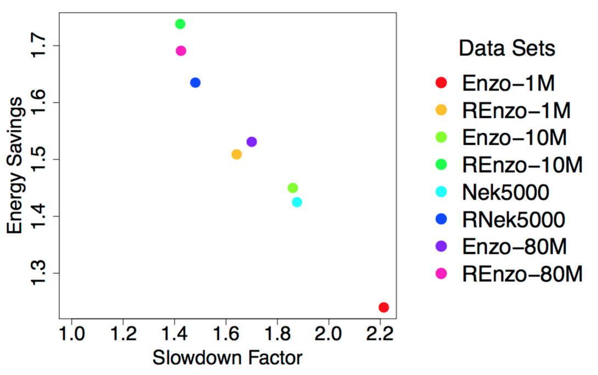

|
Power-Constrained High-Performance Computing  Problem OverviewMany scientific fields, such as climate change and computational fluid dynamics, use high-performance computing (HPC) as an essential component for advancing on their most important challenges. These fields are requiring greater and greater computational power to solve their next set of challenges, which in turn has led to the study of Exascale systems: machines capable of 10^18 floating point operations per second (FLOPS). The transition to Exascale will create many new challenges, but the most significant challenges will center around power usage and energy consumption, more specifically how to maximize throughput under a power bound. While presently users request resources on supercomputers by specifying a time length for their job, future systems will likely require users to specify the number of Watts required to run their job. Comparing to the current generation of supercomputers, Exascale systems will need to achieve three orders of magnitude more floating point operations and can use only one order of magnitude more power to do so. As a result, every part of the HPC ecosystem needs to be re-designed with power-efficiency in mind. The power and performance tradeoffs of tunable system knobs, such as disabling certain cores and varying core frequencies, has been studied over the years, more recently since power is becoming a constrained resource in HPC systems. While these optimizations have worked thus far to reduce energy, Exascale systems may also require energy-efficient software techniques in order to reach our computational goals. Examples of such knobs would include data block sizes, execution strategies, and controls over hardware execution. With our research, we are focusing on the effects of these knobs on visualization and analysis routines, which are significantly more data-intensive than many other typical HPC workloads run on supercomputers. Our ultimate goal is to understand the tradeoffs between power and performance. Ideally, we will find techniques that minimize energy usage and power consumption and maximize performance. However, we believe that providing controls to energy-aware simulations that enable the simulation to adapt the performance and power usage of a visualization routine would also be very valuable. Results To DateWe have been conducting various experiments to develop a database of tunable systema and software knobs and their power and performance tradeoffs. We wrote multiple VTK programs to study the power implications of different algorithms and have found that the impacts vary widely across several factors including algorithm implementation, concurrency, data set, parallel programming modelm and hardware architecture. Depending on the architecture, we leverage Intel's Running Average Power Limit (RAPL) technology or other power management packages to measure the energy consumption of these workloads and use various Linux APIs to modify the CPU frequency. Future goals include: The image on this page shows the impacts of one potential software knob on the tradeoffs between runtime and energy. We investigate the achieved energy savings for performing an isosurface on data sets of varying sizes and level of data-intensity when decreasing the CPU clock frequency. In our experiment, we had 8 different data sets originating from two simulations. We had data sets of four different sizes, listed here in increasing size -- Enzo-1M, Enzo-10M, Nek5000, Enzo-80M. Then, we wanted to investigate the effects of a data set with increased data intensity, so we randomized the point indices of the aforementioned data sets -- REnzo-1M, REnzo-10M, RNek5000, REnzo-80M. The figure shows that for our smallest and least complex data set, Enzo-1M, our algorithm has the largest increase in runtime and has the least savings in energy. As we increase the size and intensity of our data sets, we see smaller impacts to runtime with a greater savings in energy. In the future, we want to apply this software knob a wider range of visualization algorithms to see if our findings hold. PeoplePublications
|